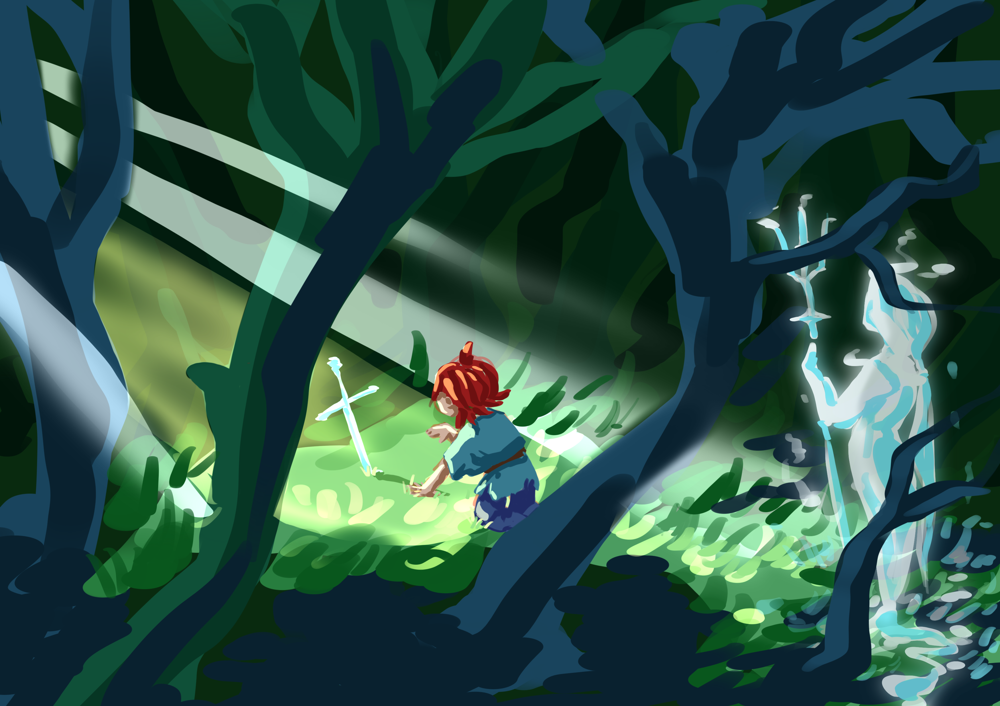
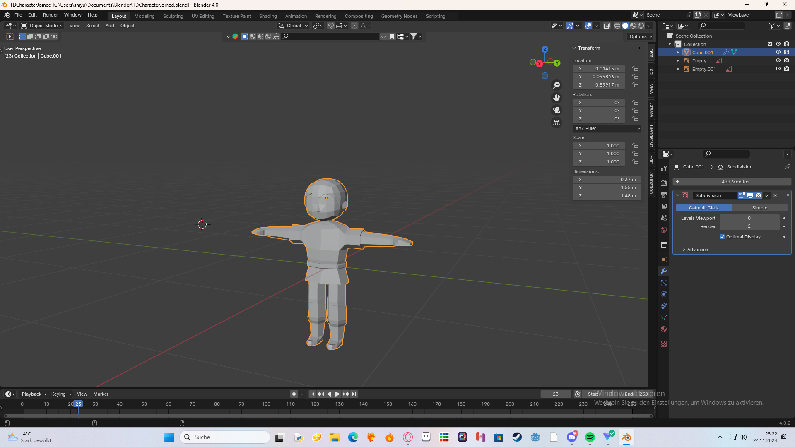
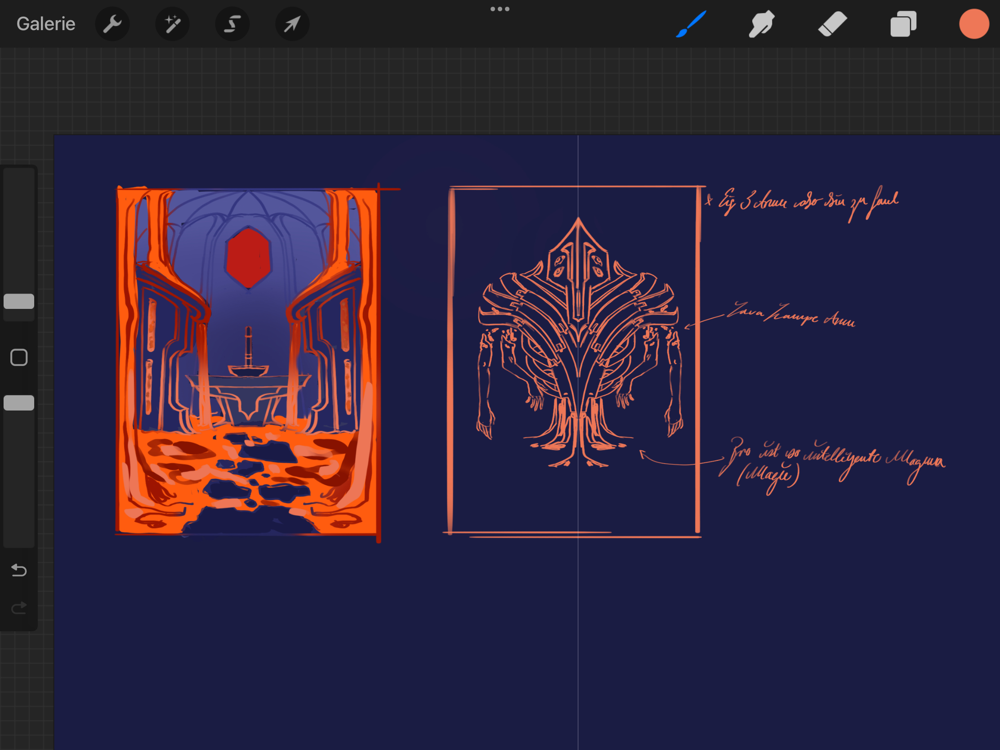
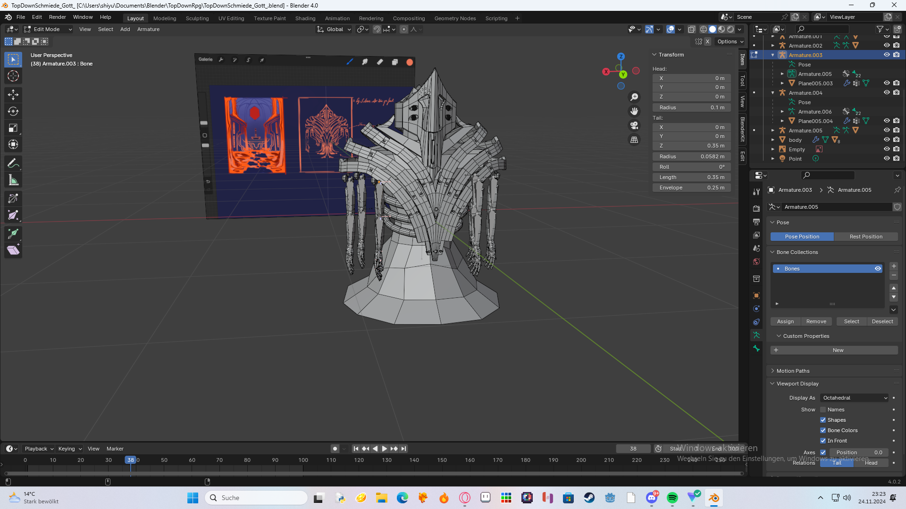
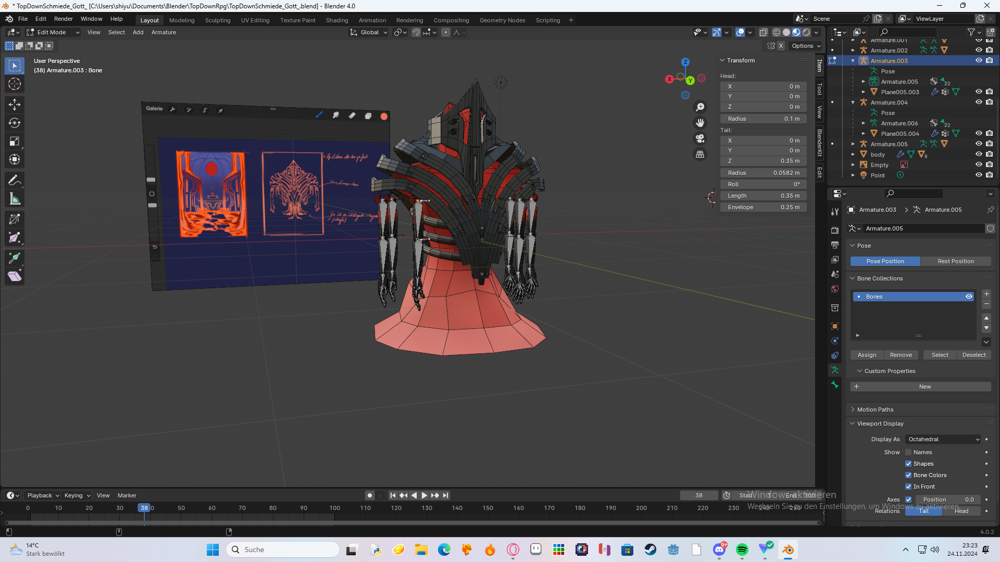

Devlog_TopDownRPG
|
 |
After gathering enough information for the game we startet thinking about how and where to start developing the game.
We first startet thinking about the art-style of the game. This was a difficult question because it defined how complex the models and textures for the game should be.
After a bit of thinking we settled on a more drawn-like and lowpoly style because it captured our intentions of how the game should feel very well. |
The First Models
|
 |
After we settled on the art-style it was time to start working on the models. The first tries were very hard because it was our first time making human models. The proportions were a mess. The hardest part was getting the nose done and good topology in order to animate later on. After a lot of trial and error we had a model that was somewhat okay but not perfect. That is the model your seing at the side. Even though it wasn't that bad it wasnt really the thing we were searching for which is why its going to change in the future. |
Initial development
After we got all the ideas together we started to develop the game.At first it was planned to use the game engine 'Godot' but after unity announced Unity6 we didnt hesitate to witch to that engine since it has a lot of advantages.
We started by programming a simple character and camera controller. After that was done we settled on the idea of creating a prototype with graphics and gameplay to see what worked and what not.
Thats why we started thinking about models again. We wanted the first model to be the upgrade-location for the players sword.
The Second Model
|
 |
After a little break we startet to think again about the story and gameplay. The image your seeing on the left is a blacksmith-god who is the only one who has the power to upgrade the sword of the Player. This was a refference drawing for the final model. |
| We started by modelling the character after the refference. This took a few days to complete. After the model was finished we had to texture it. To get the kind of lava-effect on the body we used a random-noise texture to get the rough black details. This texture was then blurred to really make the effect more believable. This wont be the final texture but it is a start. We also rigged the arms to make it easy to animate them. |
 |
The final outcome of the model:
